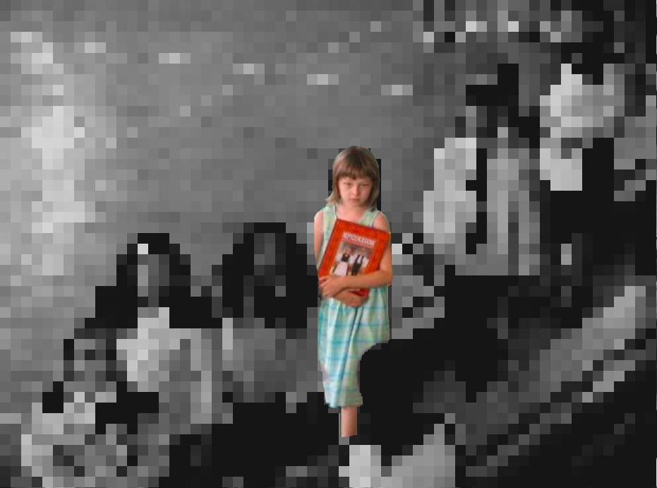

Külföldön Élő Magyarok
Számos becslés létezik a lakosság vonatkozásában. Számos forrást vettem figyelembe, a túlértékelést és az alábecsülést.
Ezt az érzést egy átlagos "harmadik kulturális gyereknek" hívják. Érdekes módon a testvéreimmel saját döntésünk alapján döntöttünk arról, hogy melyik kultúrához kötődünk leginkább (és nem, ha kíváncsi vagy, nem ugyanaz volt a válaszunk).
 TEzeket a fényképeket ugyanabban az évben készítették, amikor egyszerre két általános iskolába jártam.
Az általános iskolai karrierem végén, magyarországi tanárom megjegyezte, hogy még sok más diák kezdte el csinálni azt, amit a húggommal tettünk egész életünk során, a két iskola rendszerét.
Valószínűleg a nyomasztó nyolcéves kettős iskolai tapasztalatom miatt annyira megsértettem, amikor a magyarországi magyarok nem fogadnak el magyarnak.
Úgy tűnik, hogy nem számítasz etnikai csoport tagnak, ha nem élsz magyar határokon belül.
információ forráss:Romania információ forrásAusztria információ forrásSzlovákia információ forrásUkrajna információ forrás Szerbia információ forrásHorvátország információ forrásSzlovénia információ forrásUSA információ forrásKanada információ forrásIsrael információ forrásNémetország információ forrásNémetország információ forrásFranceOroszország információ forrásBrazil információ forrásAusztrália információ forrásUK információ forrásUK információ forrásChile információ forrásArgentína információ forrásFinnország információ forrásÚj Zéland információ forrásSvédországSwitzerland információ forrásTörökország információ forrásMexikó információ forrásIreland információ forrásLengyelorszaág információ forrásÚj Zéland információ forrásNorvégia információ forrásDánia információ forrás